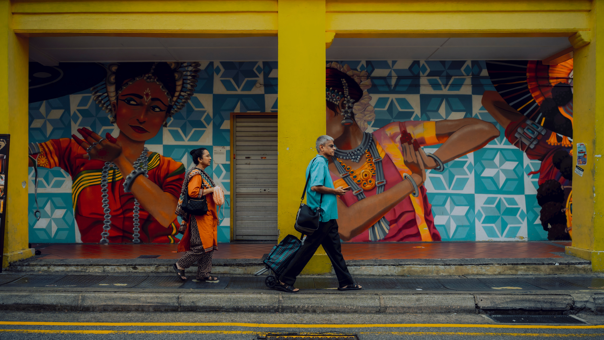
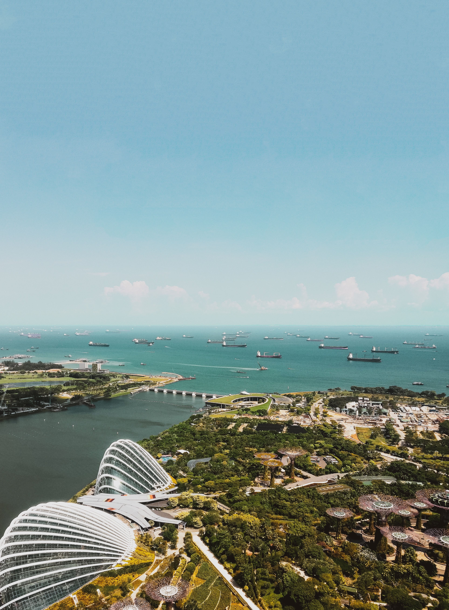
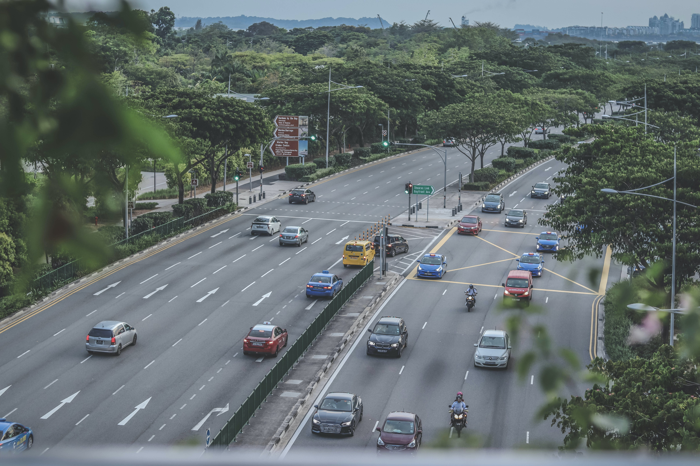
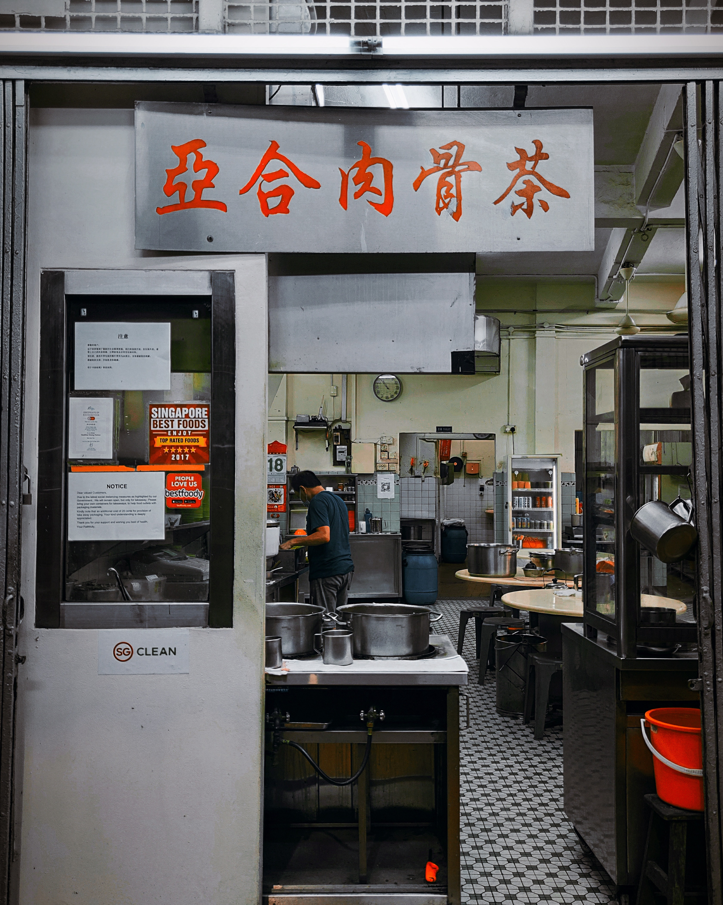

<!DOCTYPE html>
<html lang="en">
<head>
   <meta charset="UTF-8">
   <meta http-equiv="X-UA-Compatible" content="IE=edge">
   <meta name="viewport" content="width=device-width, initial-scale=1.0">
   <link rel="stylesheet" href="photos.css">
   <link rel="preconnect" href="https://fonts.googleapis.com">
   <link rel="preconnect" href="https://fonts.gstatic.com" crossorigin>
   <link href="https://fonts.googleapis.com/css2?family=Roboto+Condensed:wght@300&family=Roboto:wght@100&display=swap"
      rel="stylesheet">
   <title>Photo Blog</title>
</head>
<body>
   
</body>
   <!-- Name -->
   <nav>Jonathan/Kong</nav>
   
   <!-- Images -->
   


</html>